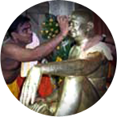

The temple is beautiful - so tranquil and serene. As soon as you enter the temple you feel the world slipping away and calm and serenity descending on you. The focus in the temple is Bhagwan Nityananda as most people visiting temple fixedly gaze at the murti and remain immersed within themselves. The flowers, coconuts offered are usually returned to the devotees after these have been blessed at Bhagwan's feet.
Ganeshpuri is a holy land since ancient times. Sage Varistha, Lord Rama's Guru, held a great yagna here and as per belief at that time installed Lord Ganesha in a temple here. Great yogis practiced penance here in the surroundings of mountain Mandagni, which has been mentioned in many scriptures. River Tejasa flows near by. Bhagwan Nityanand chose this ancient centre of great spiritual energy to stay & revive it's immortal glory. Bhagwan Nityanand came in 1937 and stayed near the hot waterspring of Bhimeshwar Mahadev temple. This is the place where His Samadhi temple is now built. When devotees multiplied, He shifted to a building named Kailash Niwas. He took Mahasamadhi in another building close by named Banglorewala building. Worship is held daily in both buildings which are maintained by the Sanstha. In a very natural manner the forest abode of Bhagwan Nityanand has changed it's shape in to a busy town.
Aartis for Bhagwan Nityanand :
Early morning Aarti - 4.22 AM
Morning Aarti - 6 AM Noon Aarti - 12 AM Evening Aarti - 8 PM Night Aarti - 9.30 PM 
|
SHREE BHIMESHWAR SADGURU NITYANAND SANSTHA GANESHPURI DAILY PROGRAMME
| 1. Samadhi Mandir | |
| Hot water kund opens | 3 AM |
| Temple opens | 4 AM |
| Kakad aarti | 4.21 AM |
| Abhishek (Bhagwan) | 4.30 AM to 5.30 AM |
| Morning aarti | 6 AM to 6.20 AM |
| Morning swadhaya | 9 AM to 9.30 AM |
| Noon aarti | 12 to 12.20 PM |
| Only thursday - palkhi (Baba's) | 6 PM to 7.30 PM |
| Bhajan / Name chanting | 7.30 PM to 8 PM |
| Evening aarti | 8 PM to 8.20 PM |
| Shayan aarti / Goodnight aarti / Temple closes | 9.30 PM |
| 2. Kailash Niwas | |
| Evening aarti | 6.15 PM |
| 3. Nirwan sthan | |
| Banglorewala building opens | 6.30 AM |
| Morning puja / Aarti | 8.00 AM |
| Mid'day aarti | 10.42 AM |
| Evening aarti | 7 PM |
| 4. Bhadrakali mandir | |
| Puja & aarti | 4.45 AM |
| Evening aarti | 7 PM |
| 5. Krishna mandir | |
| Morning puja / Aarti | 5.15 AM |
| Evening aarti | 7.45 PM |
| 6. Navgrah mandir | |
| Morning puja / Aarti | 5.30 AM |
| Evening aarti | 7.40 PM |
| 7. Bhimeshwar mahadev mandir | |
| Morning puja / Aarti | 5.30 AM |
| Evening aarti | 7.30 PM |
Bhaint, Prasad and Offerings
a) Visiting devotees normally make offerings of flowers, coconut, fruit, sweets etc at the temple. For offerings like shawl, sari, jewellery and other decorative/useful items -a receipt has to be first made in office before it will be accepted by the pujari. This ensures correct accounting of all offerings.
b) Offerings by post, courier and through visiting devotees are also received. A receipt is sent by post if offering is above Rs. 500/-
c) Shira Prasad is given in the morning, the noon and evening Aarti in the temple. Shira is prepared with great love for devotees in the Balbhojan. At other times teerth is distributed and flowers/coconut given. Fruits/Sweets etc received as offerings are distributed as prasad. Prasad as Bhagwan's blessing is sent by post in India and abroad in the form of Vibhuti and Bhagwan's picture to those devotees who make good contribution.
Shri. V.K. Hingorani
Shri Ravindra Mehta
Shri Rajan javeri
Shri Anand Anvekar
Shri Kamlesh Dhoot
Dr. Kishore Bhoir
Mrs. Nalini Patil
Mrs Soumya Shetty
Dr. Nayansingh Thakor
Shri Kumar Bhatia
Shri Vishnu Patil
After an interval of about 6 years, work has been undertaken to repair and renovate the Samadhi shrine. All the plant growth from the outside of temple was removed. A Silver Arc for entrance to Samadhi Sanctum was made.
There are smaller projects like: Improving lodging facilities for devotees, improving water supply situation, provision of water cooler, derusting park & Navgrah Mandir fencing & renewing/ repairing /repainting same. etc.
AIRPORT:
Nearest airport is Mumbai, 60 kms.
RAILWAY:
Nearest railhead are Thane, Kalyan on Central Railway and Vasai Road, Virar on
Western Railway. There are frequent trains.
ROAD:
Mumbai Ganeshpuri 80 kms. Via Bhivandi and 88kms. Via Ghodbunder. State Transport buses ply from Thane, Kalyan, Virar and Vasai to Ganeshpuri.
Distances, Altitude and Temperature
Ganeshpuri is about 30 kms. by road from the local railway station Vasai road or Virar. The state transport buses take about one hour up to Ganeshpuri. From local trains rail stations Kalyan to Thane. There are state transport buses via Bhiwandi to Ganeshpuri. For faster bus journey it may be better to take buses via Bhiwandi and change bus other from Bhiwandi to Ganeshpuri. Bus travel time may be up to 2 hours. Ganeshpuri is in a valley on the bomks of Tansa river and the attitude is only a few hundred feet above mean sea level. The woods and hills around give it a serene atmosphere.
June to August is the rainy (umbrella) season. In September & October days are a bit warm but nights are pleasant. November to February days are pleasant and light warm clothing or shawl is required in the mornings and evenings. From March it starts becoming warmer. April to May are progressively warmer when very light cotton clothes are desirable.
Climate Consideration and clothing
Ganeshpuri gets very good rainfall during the monsoons. The arrival of monsoon in June first + 3 week is greeted by everyone as it brings relief from the summer heat. Monsoon showers are
up to September when the cool starts setting in slowly. Light woolen are required from evening to early fore noon from November to February. From March the temperatures stars to rise and it is sweat season till the rains come.
As far as possible opportunity is provided to the devotees to perform worship at the Samadhi shrine and Bhadrakali temple in the way they like. Many requests, are received, by mail with money to perform specific puja on some specific date. These are entered in the temple diary kept for the purpose and punctually performed for the devotee. In keeping with the sanctity and glory of the Holy Shrine, various Poojans, Havans and religious rituals are performed here. Some of these are performed daily while others are periodical in nature. On the persistent requests of the devotees and keeping in view their sentiments, it has been decided to permit the devotees to participate in some of these poojans in a spiritual way.
Sevas For Devotees
| Karpoor Aarti | Rs. 31/- |
| Karpoor Aarti (Bhadrakali) | Rs. 31/- |
| Kumkum Archana | Rs. 31/- |
| Feeding Ceremony (child) | Rs. 51/- |
| Paduka Abhishek | Rs. 101/- |
| Paduka Abhishek (Bhadrakali) | Rs. 101/- |
| One Time Puja with Prasad | Rs. 251/- |
| Palki Procession around Temple | Rs. 251/- |
| Vehicle Puja (2 or 3 Wheeler) | Rs. 251/- |
| Vehicle Puja (4 Wheeler) | Rs. 501/- |
| Shri Satyanarayan Mahapuja with Prasad | Rs. 501/- |
| One day complete Puja (with Puja Material) | Rs. 551/- |
| Balbhojan with rice & Sambhar | Rs. 2500/- |
| Balbhojan - rice, sambhar,sukibhaji & khir | Rs. 3500/- |
| Bhandara -1 bag rice, sambhar,bhaji & khir | Rs. 8000/- |
| Bhandara 1.25 bag rice, sambhar,bhaji & khir | Rs. 10000/- |
| Bhandara 1.50 bag rice, sambhar,bhaji & khir | Rs. 12000/- |
| Bhandara 2 bag rice, sambhar,bhaji & khir | Rs. 16000/- |
| MAHAPOOJA | Rs. 11000/- |
FOLLOWING SEVAS ARE AVAILABLE IN SANSTHA FOR THE CONVENIENCE OF THE DEVOTEES
| Mahapooja -Abhishek | Rs.11,000/- |
| One day complete Pooja (with all Pooja Material) | Rs. 551/- |
| One time Pooja with Prasad | Rs. 251/- |
| Paduka Abhishek | Rs. 101/- |
| Karpoora Arti | Rs. 31/- |
| Kum Kum Archana | Rs. 31 |
| Palki Procession around Baba's Samadhi Mandir | Rs. 251/- |
| Feeding Ceremony of small children | Rs. 51/- |
| Balbhojan (children feedings ) with Rice and Sambar | Rs. 2500/- |
| Balbhojan with Rice,Sambar,Suki Bhaji and Khir | Rs. 3500/- |
| Bhandara 1Bag Rice,Sambhar with Bhaji and Khir | Rs. 8000/- |
| Bhandara 1 1/4 Bag Rice,Sambhar with Bhaji and Khir | Rs. 10,000/- |
| Bhandara 1 1/2 Bag Rice,Sambhar with Bhaji and Khir | Rs. 12,000/- |
| Bhandara 2 Bag Rice,Sambhar with Bhaji and Khir | Rs. 16,000/- |
| Vehicle Pooja (Two or Three Wheeler) | Rs. 251/- |
| Vehicle Pooja (Four Wheeler) | Rs. 501/- |
| Shri Satyanarayan Mahapooja with Prasad | Rs. 501/- |
| Paduka Abhishek (Bhadrakalki Temple ) | Rs. 101/- |
| Karpoor Aarti (Bhadrakalki Temple ) | Rs. 31/- |